Rose, Castle and Hout Streets retain evidence of a culture of the merchant/ artisan – people and families who fabricate/process goods and sell them from their property, or have a history of shop-keeping.
Typically, along many high streets, these families would have lived above their shop and/or workshop. Nowadays, entire buildings tend to be occupied by a single commercial enterprise, displacing these family businesses (and the extended family occupying the premises above).
In this project a prototype of a new model is developed, testing its appropriateness to development in areas like the Bo-Kaap.

 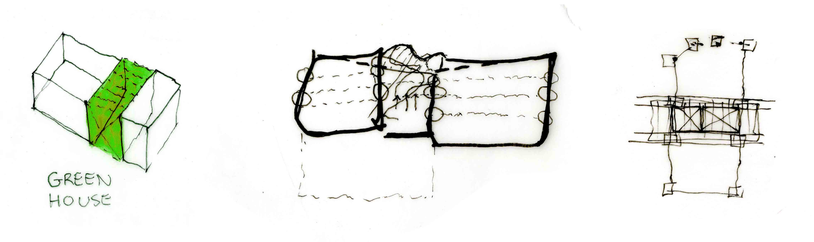
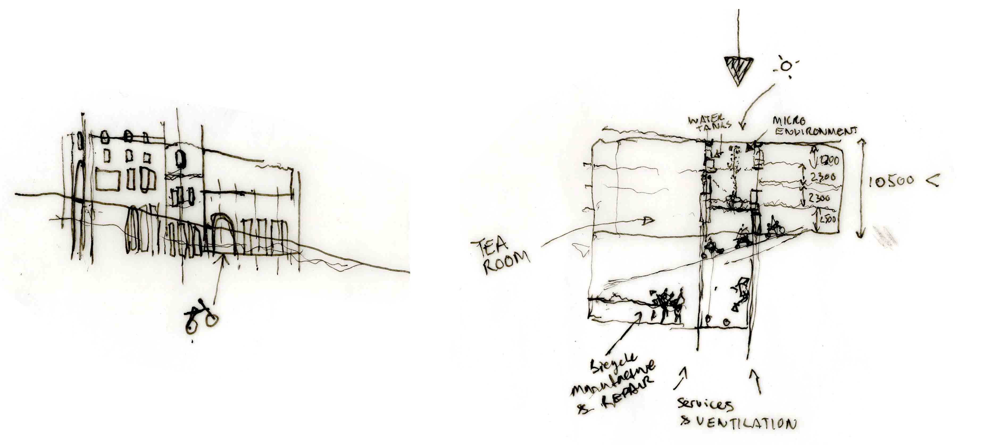
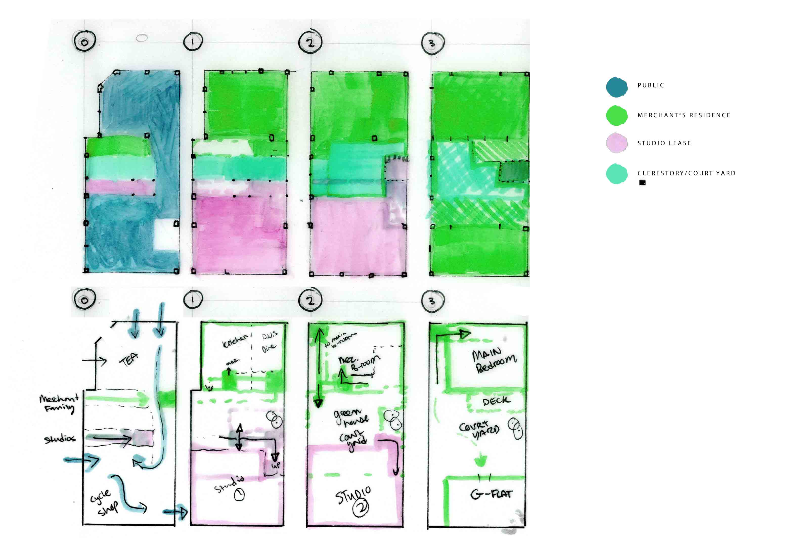
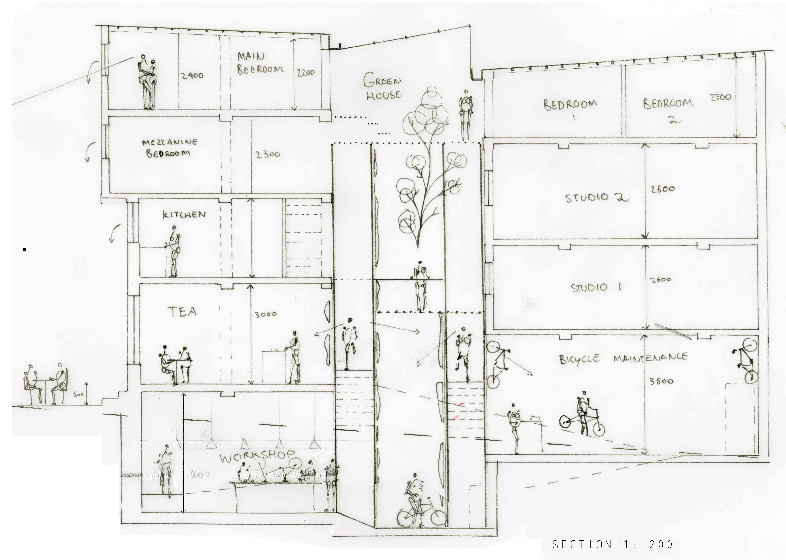
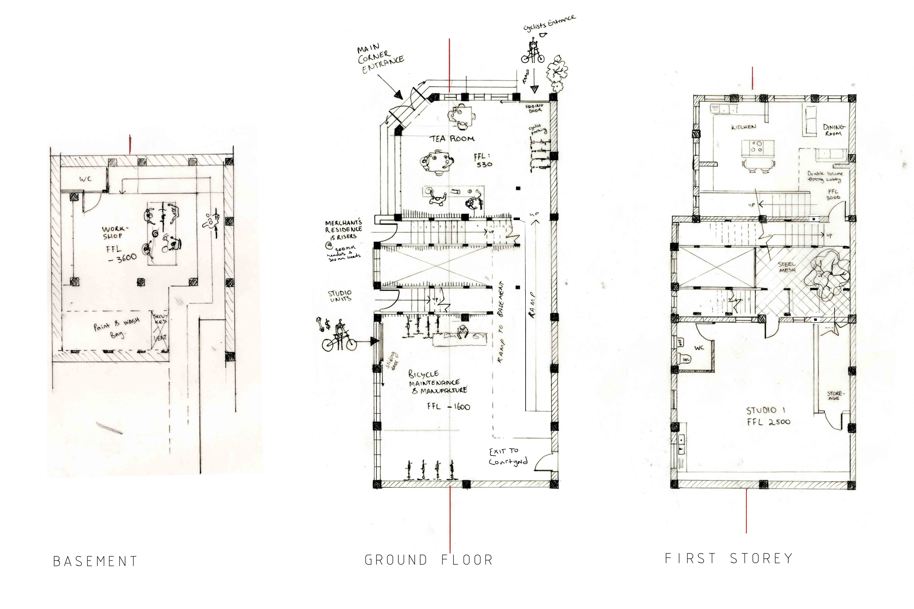
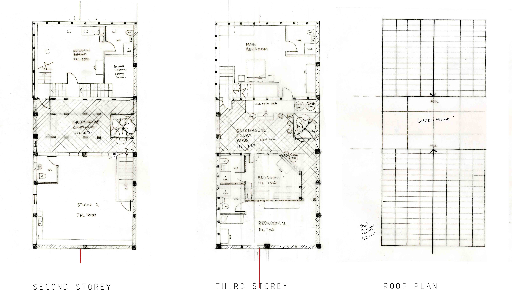
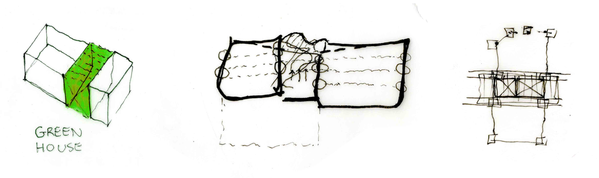
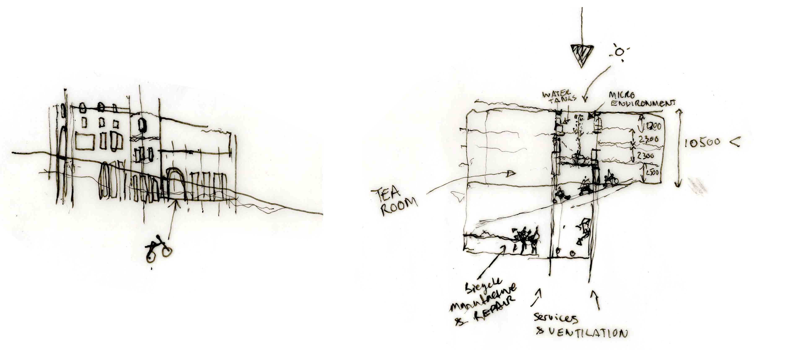
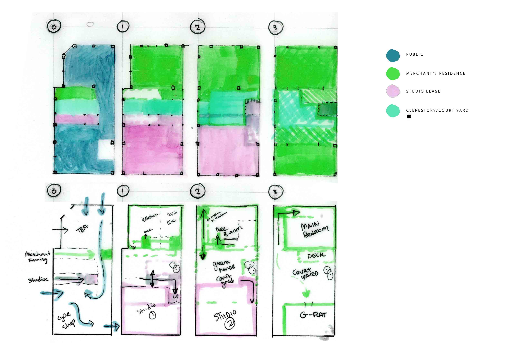
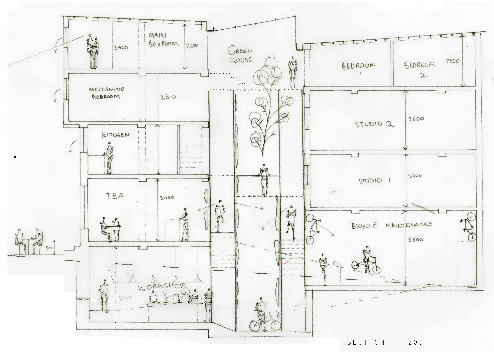
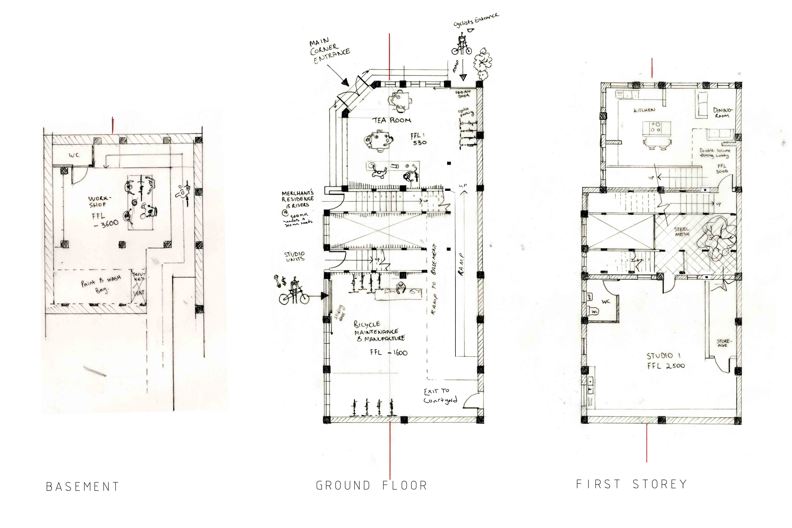
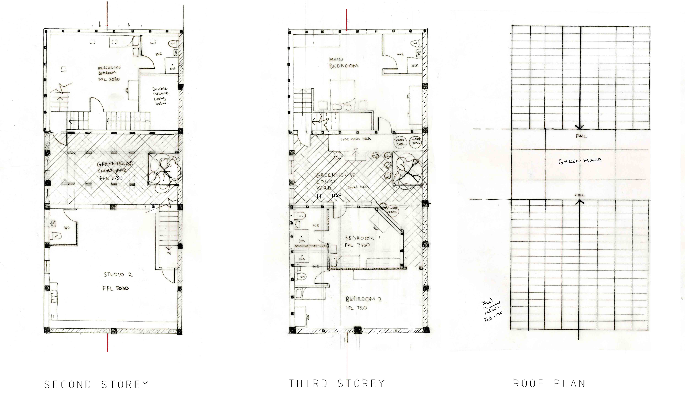

 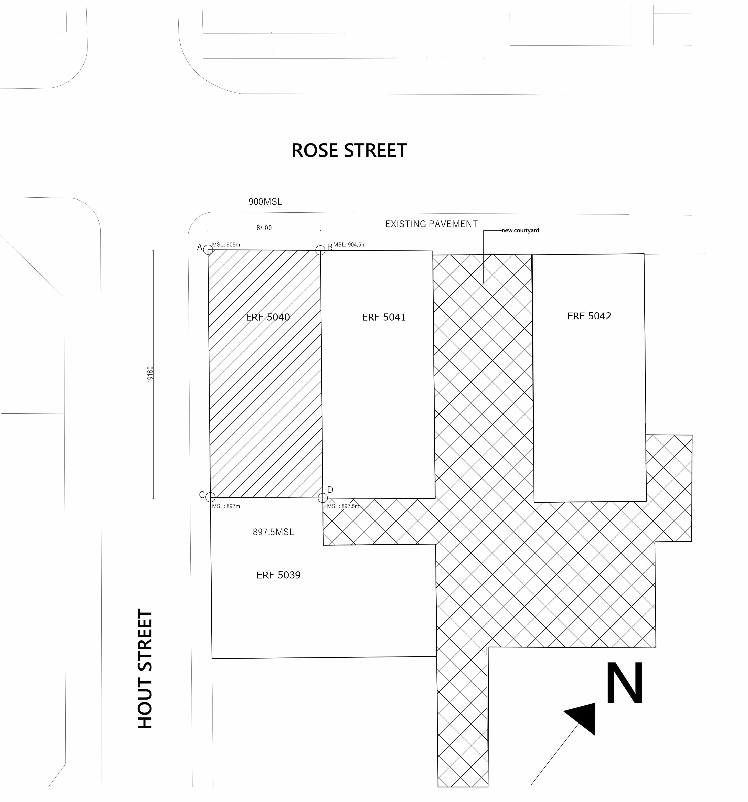
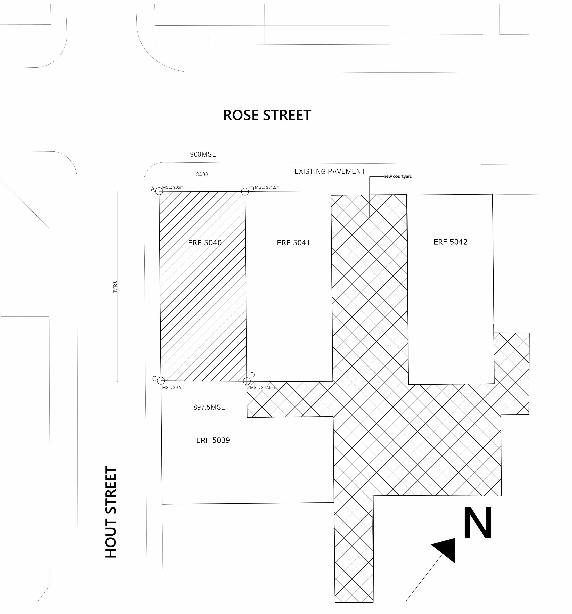